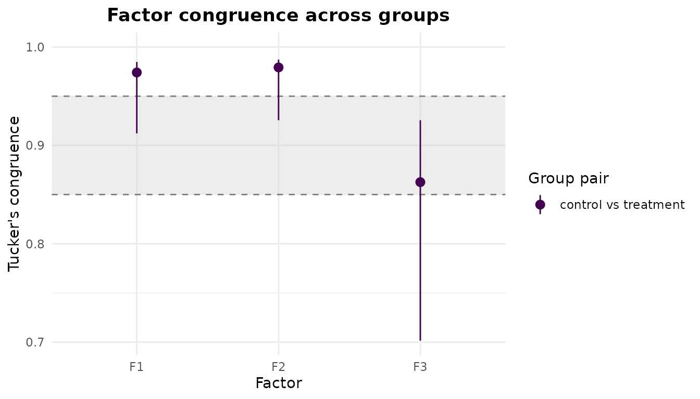
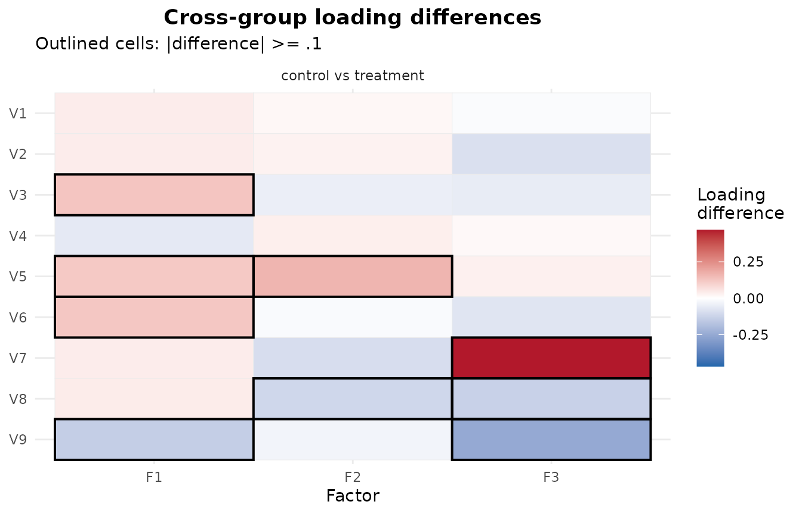

Multigroup exploratory factor analysis
Source:vignettes/articles/Multigroup_EFA.Rmd
Multigroup_EFA.RmdWhen the same set of items is administered to several groups – age
bands, treatment arms, translated versions of a questionnaire – a
natural question is whether the items measure the same factors
in each group. efa_group() answers it by fitting an
exploratory factor analysis in every group at a common number of
factors, bringing the per-group solutions into one shared orientation,
and then comparing their loadings.
The comparison is not as simple as extracting a solution in each
group and reading the loadings side by side. A factor solution is
identified only up to a rotation of its factors, so two groups can have
identical factor structures yet return loading matrices that look
nothing alike – the factors may be reflected, reordered, or rotated
relative to one another. Before the loadings can be compared they must
be brought into a common orientation. That alignment is what
efa_group() does for you, on top of the per-group fits, and
it is the reason a dedicated function is worth having.
Two groups with a known difference
To see the tools work we need groups whose factor structures we
already know, so we can check that the analysis recovers the difference
we built in. We simulate two groups from a three-factor model with
efa_simulate(). Both groups share the same simple structure
– three items per factor – except in how factor 3 is built: in the
control group item V7 is that factor’s
strongest indicator, whereas in the treatment group
V7 nearly drops off it and V9 becomes the
strongest instead. Factor 3 is therefore defined by a different item in
each group, which should lower its cross-group congruence and light up
the per-item difference flags – while factors 1 and 2, whose items are
untouched, stay highly congruent.
# Common simple structure: three items per factor.
Lambda_control <- matrix(0, nrow = 9, ncol = 3,
dimnames = list(paste0("V", 1:9), paste0("F", 1:3)))
Lambda_control[1:3, 1] <- c(.70, .65, .60)
Lambda_control[4:6, 2] <- c(.70, .65, .60)
Lambda_control[7:9, 3] <- c(.70, .65, .60)
# The treatment group is identical, except factor 3 is anchored by a different item:
# V7 nearly drops off it and V9 becomes its strongest indicator.
Lambda_treatment <- Lambda_control
Lambda_treatment["V7", 3] <- .20 # was .70
Lambda_treatment["V9", 3] <- .75 # was .60
Lambda_control
#> F1 F2 F3
#> V1 0.70 0.00 0.00
#> V2 0.65 0.00 0.00
#> V3 0.60 0.00 0.00
#> V4 0.00 0.70 0.00
#> V5 0.00 0.65 0.00
#> V6 0.00 0.60 0.00
#> V7 0.00 0.00 0.70
#> V8 0.00 0.00 0.65
#> V9 0.00 0.00 0.60
Lambda_treatment
#> F1 F2 F3
#> V1 0.70 0.00 0.00
#> V2 0.65 0.00 0.00
#> V3 0.60 0.00 0.00
#> V4 0.00 0.70 0.00
#> V5 0.00 0.65 0.00
#> V6 0.00 0.60 0.00
#> V7 0.00 0.00 0.20
#> V8 0.00 0.00 0.65
#> V9 0.00 0.00 0.75Each group is drawn with its own seed so the example is fully reproducible.
control <- efa_simulate(N = 300, Lambda = Lambda_control, seed = 1)$data
treatment <- efa_simulate(N = 300, Lambda = Lambda_treatment, seed = 2)$data
# efa_group() requires the same items, in the same order, in every group.
colnames(control) <- rownames(Lambda_control)
colnames(treatment) <- rownames(Lambda_treatment)
groups <- list(control = control, treatment = treatment)Groups can be supplied either as a single raw data set together with
a groups vector (one value per row), or – as here – as a
named list of per-group data sets. The list may also hold per-group
correlation matrices instead of raw data, in which case you pass their
sample sizes through N.
Fitting at a common number of factors
efa_group() fits each group with efa_fit()
at the common n_factors, forwarding any estimation and
rotation settings unchanged to every group. Here we extract three
factors with a varimax rotation.
mg <- efa_group(groups, n_factors = 3, rotation = "varimax")
mg
#> ── Multigroup exploratory factor analysis ──────────────────────────────────────
#>
#> 2 groups (control, treatment) · 3 factors · PAF extraction · varimax rotation
#> Aligned to a symmetric consensus target.
#> N: control = 300, treatment = 300
#>
#> ── Factor congruence ───────────────────────────────────────────────────────────
#>
#> Tucker's congruence between the aligned group loadings (matched factors):
#>
#> F1 F2 F3
#> control vs treatment .974 .979 .863
#>
#> ── Loading differences ─────────────────────────────────────────────────────────
#>
#> Absolute loading differences by group pair (salience threshold |Δ| ≥ .1):
#>
#> mean median min max rmse flagged
#> control vs treatment .089 .055 .012 .469 .129 9/27The printed report recaps the groups and the shared model, then
summarises the two things we came for: the factor congruence between the
aligned groups, and the size of their loading differences. The aligned
per-group loading matrices are in $loadings, sharing one
column order and sign so they can be read against each other
directly.
lapply(mg$loadings, round, 2)
#> $control
#> F1 F2 F3
#> V1 0.00 0.67 -0.03
#> V2 -0.04 0.68 0.05
#> V3 0.09 0.61 -0.05
#> V4 0.67 0.00 -0.03
#> V5 0.75 0.02 0.08
#> V6 0.63 0.02 -0.03
#> V7 -0.02 -0.05 0.68
#> V8 0.04 -0.04 0.52
#> V9 0.02 0.02 0.59
#>
#> $treatment
#> F1 F2 F3
#> V1 -0.04 0.65 -0.01
#> V2 -0.08 0.65 0.14
#> V3 -0.04 0.65 0.01
#> V4 0.73 -0.04 -0.04
#> V5 0.63 -0.15 0.05
#> V6 0.50 0.03 0.04
#> V7 -0.06 0.05 0.21
#> V8 0.00 0.07 0.65
#> V9 0.16 0.05 0.85Factors 1 and 2 line up closely across the groups. Factor 3 does not:
V7 and V9 have swapped prominence, exactly as
we built in.
Alignment: consensus versus reference
efa_group() chooses one of two alignment strategies
automatically, and the report tells you which one it used.
-
Consensus (the default for orthogonal and unrotated
solutions) builds a single symmetric target across all groups
by generalized Procrustes analysis and rotates every group to it. That
target itself could still be rotated in more than one way, so
efa_group()fixes it to one well-defined orientation: where the requested rotation identifies a unique frame, it applies that criterion to the target; otherwise – an unrotated solution, or certain bifactor requests – it uses a standard reference orientation instead. It then applies this same fixed target to every group. The shared orientation, and hence the congruences and flags below, therefore does not depend on the order the groups are listed in. This is what the fit above used. -
Reference keeps one group’s loadings fixed and
rotates every other group onto them. This path is used whenever you name
a
reference_group, and it is used automatically for oblique rotations, because the symmetric consensus target is not defined for oblique transformations with more than one factor.
When an oblique rotation triggers the reference path without an
explicit choice, efa_group() leaves the requested rotation
untouched and reports which group it used. The call below prints this
message before returning:
Oblique rotations are aligned to a reference group, not a symmetric consensus target.
ℹ The consensus target is undefined for oblique rotations with more than one factor.
ℹ Group "control" is used as the reference; set `reference_group` to choose another.It also records the choice in the settings:
mg_obl <- efa_group(groups, n_factors = 3, rotation = "oblimin")
mg_obl$settings$alignment
#> [1] "reference"Supplying reference_group forces the reference path and
chooses the anchor yourself – by name or by position:
mg_ref <- efa_group(groups, n_factors = 3, rotation = "varimax",
reference_group = "control")
mg_ref$settings$alignment
#> [1] "reference"Factor congruence with bootstrap intervals
Cross-group factor similarity is quantified by Tucker’s congruence coefficient between the aligned loadings – one value per matched factor, per group pair. A congruence near 1 means the factor is defined by the same items, in the same relative proportions, in both groups.
With raw data you can attach a percentile bootstrap confidence
interval to each congruence by setting b_boot. The
bootstrap resamples cases within each group, refits, re-aligns every
replicate to the frozen target, and recomputes the congruences; a
seed makes it reproducible and independent of any parallel
backend. If some replicate fits do not converge – a handful out of
several hundred is common – a warning reports how many. As in
efa_fit(), these replicates are kept rather than discarded,
so n_boot counts them too.
mg_ci <- efa_group(groups, n_factors = 3, rotation = "varimax",
b_boot = 500, seed = 2026)
#> Warning: 7 of 500 bootstrap replicates did not converge.
#> ℹ Their bootstrap standard errors and confidence intervals may be unreliable.
mg_ci$congruence$matched["control", "treatment", ]
#> F1 F2 F3
#> 0.9741244 0.9792535 0.8626227
mg_ci$congruence$matched_ci$lower["control", "treatment", ]
#> F1 F2 F3
#> 0.9121723 0.9256080 0.7014900
mg_ci$congruence$matched_ci$upper["control", "treatment", ]
#> F1 F2 F3
#> 0.9848410 0.9871471 0.9255560The plot() method draws the matched congruences against
the Lorenzo-Seva and ten Berge (2006) similarity bands –
.95 and above reads as “equal”, .85 to
.95 as “fair” – so a factor’s cross-group similarity can be
judged at a glance. With a bootstrap the points carry their confidence
intervals.
plot(mg_ci, type = "congruence")
Factors 1 and 2 sit at the top of the scale; factor 3, whose indicators were rearranged, drops into or below the “fair” band.
Loading differences: salient versus significant
Congruence summarises a whole factor. To see which items
drive a difference, efa_group() also compares the aligned
loadings cell by cell. $diffs gives a per-pair magnitude
summary, and $flags gives the signed difference for every
item on every factor.
An item is flagged when the groups’ aligned loadings
differ by at least delta (default 0.1) in
absolute value. This is a descriptive salience threshold, not a
significance test. When a bootstrap was run, each difference
additionally carries a confidence interval, and
ci_excludes_0 reports whether that interval clears zero –
the closest thing to a significance statement. The two need not agree: a
difference can be large enough to flag yet have an interval spanning
zero (salient but uncertain), or small yet reliably non-zero.
mg_ci$diffs
#> group_1 group_2 mean_abs_diff median_abs_diff min_abs_diff max_abs_diff
#> 1 control treatment 0.08894307 0.0553482 0.01150575 0.4687179
#> rmse n_flagged
#> 1 0.1285639 9Nine cells clear the salience threshold for this pair, and the
largest difference among them is 0.47 – several times
delta. Restricting $flags to the flagged cells
shows which cells those are, and where the two notions of “different”
line up:
flagged <- mg_ci$flags[mg_ci$flags$flagged, ]
flagged[, c("indicator", "factor", "diff", "ci_excludes_0")]
#> indicator factor diff ci_excludes_0
#> 3 V3 F1 0.1253052 FALSE
#> 5 V5 F1 0.1165165 FALSE
#> 6 V6 F1 0.1219350 FALSE
#> 9 V9 F1 -0.1409243 TRUE
#> 14 V5 F2 0.1607774 TRUE
#> 17 V8 F2 -0.1137431 FALSE
#> 25 V7 F3 0.4687179 TRUE
#> 26 V8 F3 -0.1318978 FALSE
#> 27 V9 F3 -0.2511814 TRUEThe factor-3 cells for V7 and V9 stand out
– the two largest differences in absolute value, and both with intervals
that exclude zero. That is exactly the difference we built in. Several
of the remaining flagged cells are salient without being reliably
non-zero.
The "differences" plot lays the signed differences out
as a heatmap, one panel per group pair, outlining the cells that reach
delta.
plot(mg_ci, type = "differences")
An approximate-invariance verdict
For a compact summary, invariance = TRUE grades each
factor’s congruence against the same bands used above and returns a
per-factor verdict: "equal", "fair", or
"incongruent" (congruence below .85).
mg_inv <- efa_group(groups, n_factors = 3, rotation = "varimax",
b_boot = 500, seed = 2026, invariance = TRUE)
#> Warning: 7 of 500 bootstrap replicates did not converge.
#> ℹ Their bootstrap standard errors and confidence intervals may be unreliable.
mg_inv$invariance
#> group_1 group_2 factor phi phi_lower verdict
#> 1 control treatment F1 0.9741244 0.9121723 fair
#> 2 control treatment F2 0.9792535 0.9256080 fair
#> 3 control treatment F3 0.8626227 0.7014900 incongruentWhen a bootstrap is available the verdict is read conservatively off
the lower bound of the congruence interval, so a factor is
graded “equal” only if even the lower bound clears the band. That is why
factors 1 and 2 above – comfortably above .95 as point
estimates – are graded only “fair”: their interval lower bounds slip
below .95. This is deliberately cautious, guarding against
declaring invariance on the strength of a point estimate that a modest
resample could pull below the threshold. Without a bootstrap the verdict
falls back to the point estimate, and the phi_lower column
is left NA to signal the non-conservative reading.
The verdict is a graded heuristic built on the congruence bands, not a formal test of measurement invariance. It is a fast, exploratory read on how comparable the factors are across groups – a confirmatory multigroup model remains the tool for a formal invariance test.
Where to next
efa_group() carries several further controls:
delta to tune the salience threshold, ci to
set the interval level, and any efa_fit() argument
(estimator, cor_method, an
estimate_control() or rotate_control()) to
configure the per-group estimation. See ?efa_group for the
full argument list and the structure of the returned object, and the EFAtools vignette for the single-group workflow
the per-group fits build on.